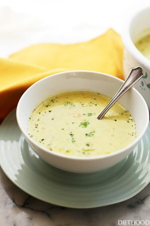

Broccoli Soup

Description
This is the best broccoli soup out there.
Ingredients
- 2 tbsp oil
- 1 onion, diced
- 1/4 cup flour
- 3 tbsp butter
- 1/2 cup heavy cream
- 3 cups low sodium chicken broth
- 1 bay leaf
- 1 bag (16 ounces) frozen broccoli florets, thawed
- 1/2 teaspoon salt
- 1/4 teaspoon paprika
- 1 tsp garlic powder
- 1/8 teaspoon ground pepper
- 8 ounces low fat shredded cheddar cheese
- Put a pot on the stove over medium heat.
- Warm oil and fry the diced onion.
- Add butter to the pot and melt.
- Whisk in the flour until a roux develops.
- Whisk in the chicken broth and cream.
- Add bay leaf, and turn up heat to high; bring soup to a boil.
- Add the broccoli florets and all spices, and cook over medium heat for 20 minutes.
- Purée as desired with immersion blender.
- Continue to cook over low heat and add the grated cheese; stir until melted and completely combined.
- Remove from heat.
- Taste for seasoning and adjust accordingly.
- Serve.